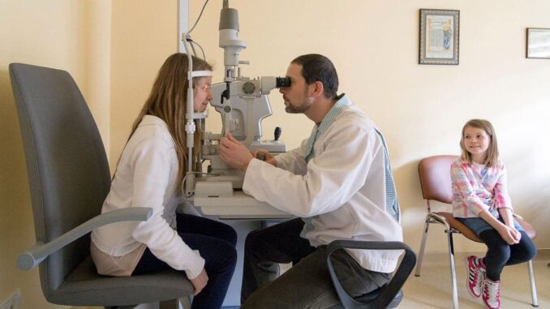
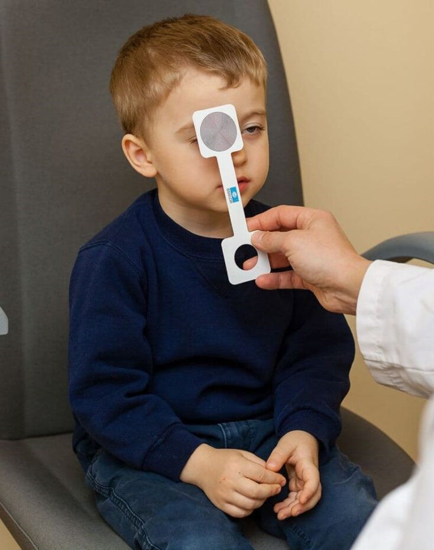

Tratamente și corecții la strabism
Strabismul este o afecțiune oculară care afectează alinierea ochilor, astfel încât aceștia nu se uita în aceeași direcție. Altfel spus, strabism înseamnă absența paralelismului axelor vizuale (vederea încrucișată).
Există mai multe tipuri de strabism, anume esotropia (ochii sunt îndreptați spre nas), exotropia (ochii sunt îndreptați spre exterior), hipertropia (un ochi este mai sus decât celălalt) și hipotropia (un ochi este mai jos decât celălalt). Strabismul poate fi prezent la naștere sau poate apărea mai târziu în viață, din cauza unor factori precum leziuni ale creierului, tulburări de dezvoltare a vederii binoculare sau paralizii ale nervilor oculomotori.

În mod normal cei doi ochi furnizează două imagini ușor diferite care sunt fuzionate la nivelul sistemului nervos central în imaginea tridimensională pe care o percepem conștient. Datorită distanței dintre ochi aceste două imagini au o foarte mică disparitate ceea ce permite, prin fenomenul numit paralaxă, existența vederii stereoscopice. Acesta este mecanismul normal al vederii binoculare.
Dacă se pierde alinierea axelor oculare, disparitatea dintre cele două imagini devine prea mare și ele nu mai pot fi fuzionate. Astfel poate să apară vederea dublă (diplopie) sau suprapusă (confuzie). Pentru a elimina aceste efecte deranjante, creierul nostru recurge adesea la fenomenul numit neutralizare, suprimând una dintre imagini. Pe termen lung, aceasta poate deveni definitivă, limitând, uneori sever, potențialul funcțional al unui ochi, transformându-se în ceea ce numim ambliopie.
Terapia ambliopiei și tratamente pentru strabism
Ambliopia poate avea diferite grade de severitate, fiind ușoară, medie sau profundă, în funcție de nivelul acuității vizuale restante și poate fi reeducată cu rezultate foarte bune până la vârsta școlară (6-7 ani). După această vârstă se încheie dezvoltarea vederii binoculare, recuperarea vederii unui ochi ambliop fiind extrem de dificilă și cu rezultate mult mai limitate.
Deviația strabică care poate duce la dezvoltarea unei ambliopii nu e întotdeauna evidentă, de aceea este esențial ca toți copii să fie văzuți de un specialist în scop de screening în jurul vârstei de 3-4 ani.
Printre cauzele strabismului și ale ambliopiei o pondere însemnată o au viciile de refracție necorectate, în special hipermetropiile, astigmatismele și anizometropiile (diferențele dintre cei doi ochi), cauză a strabismelor acomodative. Există, bineînțeles, și alte tipuri de strabisme: cele congenitale, cele cauzate de pareze ale unor nervi oculomotori (congenitale sau dobândite), cele de cauză mecanică (restrictive) etc.
În cazul strabismelor, paleta terapeutică este largă și depinde, în mod evident, de cauza subjacentă.
Acestea ar putea fi
- simpla purtare a corecției optice în cazul strabismelor acomodative;
- tratamente ortoptice - exerciții care învață ochii să lucreze împreună;
- tratamente pleioptice - ocluzia sau penalizarea temporară a unui ochi;
- corecții chirurgicale.
Impactul strabismului în societate
În lumea contemporană, strabismul este o problemă comună și afectează aproximativ 4% din populația globală. Afecțiunea poate avea un impact negativ asupra vieții sociale și emoționale a persoanelor afectate. Poate duce la dificultăți în comunicare, la ostracizarea socială și la scăderea încrederii în sine. De aceea, este important ca persoanele cu strabism să aibă acces la tratamente eficiente și să beneficieze de sprijin psihologic și social.
Nu există nicio legătură directă între strabism și nivelul de educație al unei persoane. Strabismul este o afecțiune medicală care poate apărea la oricine, indiferent de nivelul de educație.
Nivelul de educație al unei persoane poate influența însă accesul la informații despre strabism și tratamentele disponibile, dar acesta nu afectează apariția sau gravitatea afecțiunii în sine. Oricine are probleme de vedere trebuie să poată să se consulte cu un specialist oftalmolog, indiferent de nivelul lor de educație sau de alte factori socio-economici.
Există studii care arată că copiii care suferă de strabism pot fi discrimnați de colegii lor de școală. Tocmai din acest motiv merită să faceți tot ce vă stă în putința pentru a vă vindeca copilul. Citește despre cum discriminarea celor cu strabism începe încă de la vârsta de șase ani.
Rata de vindecare a strabismului poate varia în funcție de cauza și de severitatea afecțiunii. Marea majoritate a copiilor cu strabism pot fi tratați cu succes prin intermediul terapiei cu ochelari, exercițiilor ortoptice sau intervențiilor chirurgicale. Este important să se consulte la timp un medic oftalmolog pentru evaluarea și tratamentul adecvat.